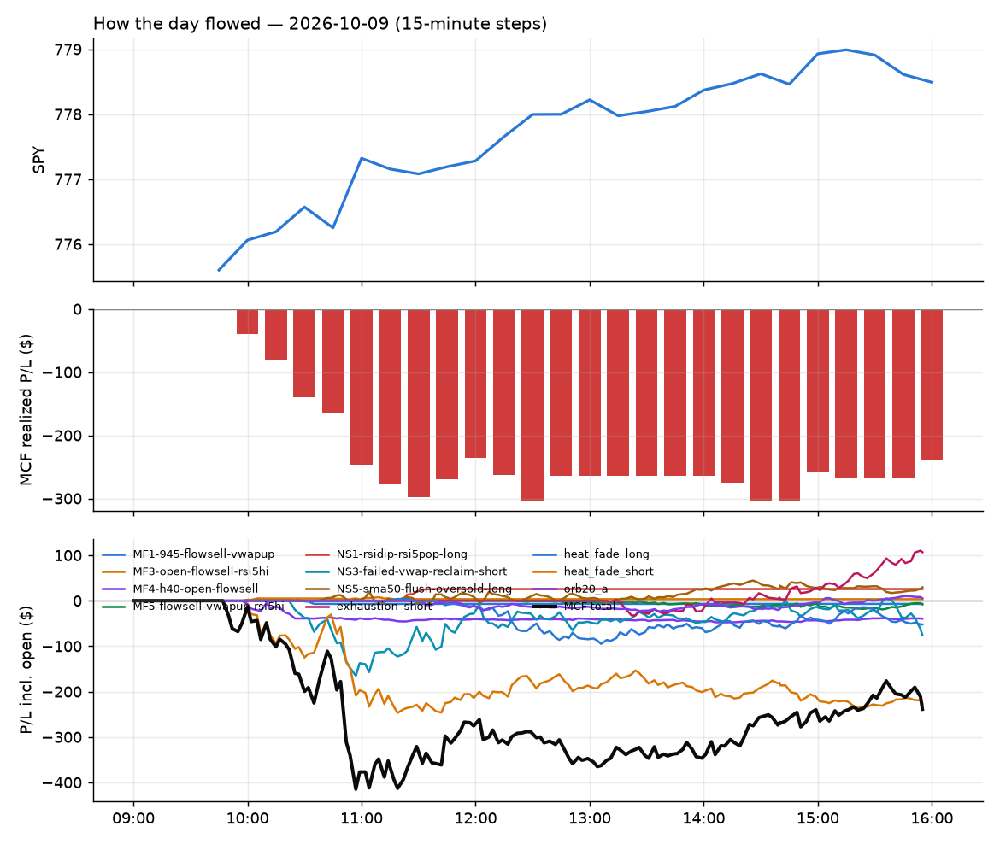

70 trades · win rate 41% · P/L $-238.87
PROBATION: no live setup has passed both locked test periods. 10 owner-directed setups added 2026-10-08 (MarcoFlow top 5 + 5 new), untested live. RW6G1 (RW6 + VWAP band guard) added 2026-10-09, probation.

| Symbol | Setup | Side | In | Out | Entry | Exit | Exit reason | % lost | P/L |
|---|---|---|---|---|---|---|---|---|---|
| FCEL | NS3-failed-vwap-reclaim-short | short | 10:26 | 10:51 | 17.31 | 17.73 | stop | -2.43% | $-46.21 |
| HUT | heat_fade_short | short | 10:06 | 11:05 | 79.94 | 81.83 | stop | -2.36% | $-43.47 |
| BE | heat_fade_short | short | 10:05 | 15:17 | 274.36 | 280.09 | stop | -2.09% | $-34.39 |
| MXL | MF4-h40-open-flowsell | short | 10:01 | 10:23 | 94.00 | 95.96 | stop | -2.08% | $-39.11 |
| FICO | heat_fade_long | long | 12:30 | 14:16 | 691.59 | 677.21 | stop | -2.08% | $-28.76 |
| PURR | NS3-failed-vwap-reclaim-short | short | 10:21 | 10:35 | 11.20 | 11.43 | stop | -2.05% | $-39.33 |
| CRCL | heat_fade_short | short | 09:50 | 10:08 | 81.76 | 83.36 | stop | -1.96% | $-36.80 |
| LITE | heat_fade_short | short | 09:51 | 10:23 | 1085.54 | 1105.00 | stop | -1.79% | $-19.46 |
| AKAM | heat_fade_short | short | 09:50 | 11:31 | 102.51 | 104.20 | stop | -1.65% | $-30.42 |
| CLS | heat_fade_short | short | 10:30 | 14:24 | 360.29 | 366.16 | stop | -1.63% | $-29.35 |
Signal to fill: median 2s, 90th percentile 3s (70 trades). Bars close each minute; the order follows the bar close.
Best excursion (MFE): median 0.47R; worst (MAE) median 0.79R. 26% of trades never got +0.25R in our favour; 1 reached +1R and still closed at or below 0.
| Symbol | Setup | Best R | Worst R | Closed R |
|---|---|---|---|---|
| GE | heat_fade_short | +2.46 | -1.18 | -1.01 |
| ILF | MF1-945-flowsell-vwapup | +0.99 | -1.15 | -1.07 |
| RIO | heat_fade_short | +0.90 | -1.01 | -1.05 |
| JBL | heat_fade_short | +0.54 | -1.04 | -1.04 |
| BE | heat_fade_short | +0.50 | -1.02 | -1.02 |
| Entry time | Trades | Win | Avg R | P/L |
|---|---|---|---|---|
| 09:50-10:30 | 35 | 31% | -0.44 | $-350.63 |
| 10:30-11:30 | 17 | 47% | +0.02 | $5.31 |
| 11:30-13:00 | 10 | 40% | +0.02 | $1.37 |
| 13:00-14:00 | 7 | 71% | +0.32 | $71.06 |
| 14:00-16:00 | 1 | 100% | +0.77 | $34.02 |
| Setup | Trades | Win | Avg R | P/L |
|---|---|---|---|---|
| MF1-945-flowsell-vwapup owner-directed; holdouts once: Sep-Oct +0.169R n86, Apr-Jun -0.050R n429 | 1.0 | 0% | -1.07 | $-7.00 |
| MF3-open-flowsell-rsi5hi owner-directed; holdouts once: Sep-Oct -0.059R n170, Apr-Jun -0.034R n729 | 3.0 | 67% | -0.10 | $3.45 |
| MF4-h40-open-flowsell owner-directed; holdouts once: Sep-Oct -0.117R n147, Apr-Jun -0.017R n735 | 2.0 | 0% | -0.58 | $-39.53 |
| MF5-flowsell-vwapup-rsi5hi owner-directed; holdouts once: Sep-Oct -0.001R n264, Apr-Jun -0.010R n1199 | 5.0 | 40% | -0.15 | $-7.97 |
| NS1-rsidip-rsi5pop-long owner-directed; holdouts once: Sep-Oct +0.326R n10, Apr-Jun +0.056R n119 | 3.0 | 100% | +0.48 | $25.72 |
| NS3-failed-vwap-reclaim-short owner-directed; holdouts once: Sep-Oct +0.119R n65, Apr-Jun -0.136R n524 | 8.0 | 38% | -0.23 | $-76.25 |
| NS5-sma50-flush-oversold-long owner-directed; holdouts once: Sep-Oct -0.008R n73, Apr-Jun +0.002R n231 | 4.0 | 50% | +0.34 | $29.43 |
| exhaustion_short failed Apr-Jun holdout: -0.020R/trade over 622 trades | 4.0 | 100% | +0.80 | $106.87 |
| heat_fade_long failed Apr-Jun holdout: -0.138R/trade over 1043 trades | 8.0 | 25% | -0.16 | $-52.22 |
| heat_fade_short failed Apr-Jun holdout: -0.015R/trade over 1420 trades | 31.0 | 32% | -0.37 | $-226.75 |
| orb20_a failed Apr-Jun holdout: -0.040R/trade over 421 trades | 1.0 | 100% | +0.16 | $5.38 |
Every trade is attached as a CSV you can open and edit in Excel or Google Sheets. Live page: https://misiti15.github.io/MCF/live/